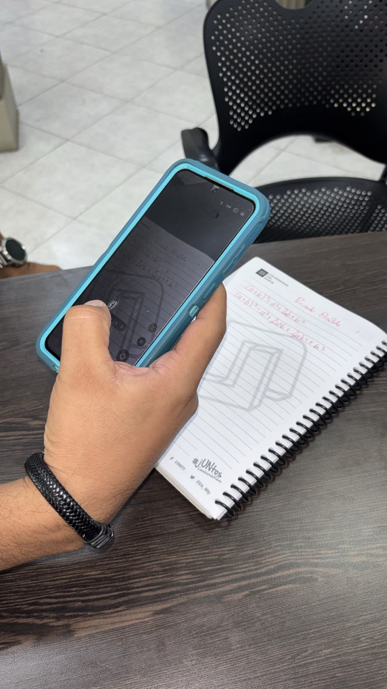
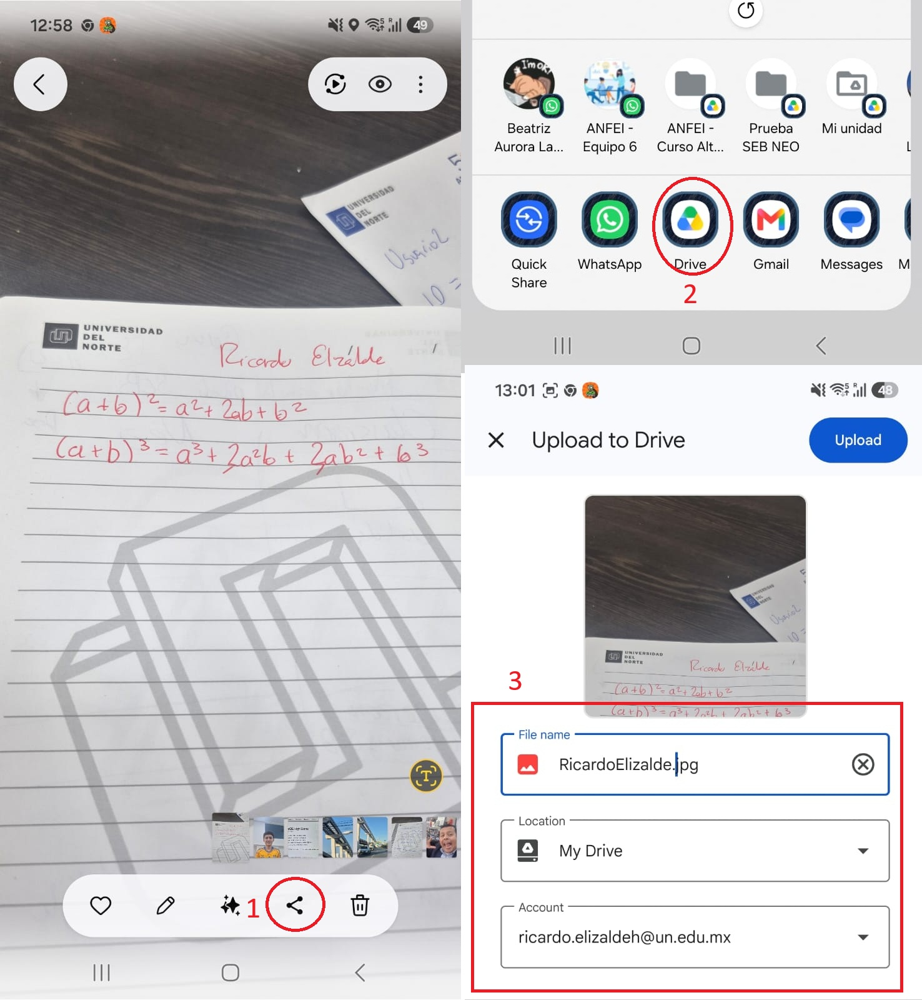
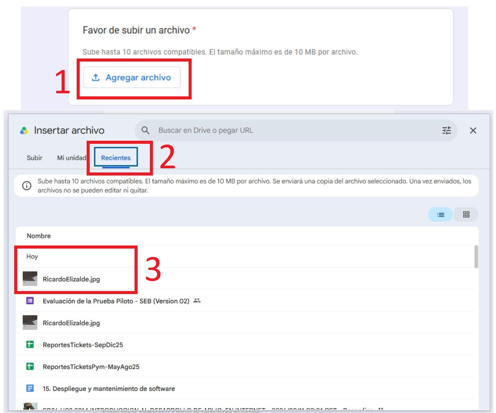
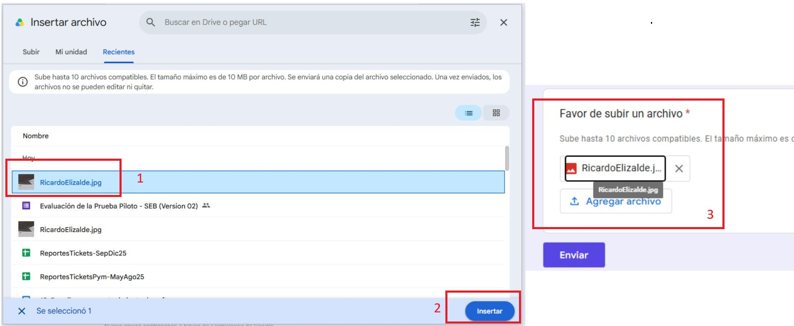

Abrir el Examen desde Classroom
- Acceda a la publicación de Classroom: Ubique la tarea o evaluación en el área de Trabajo de clase de su grupo.
-
Descargue el archivo de acceso: Haga clic en el archivo adjunto con extensión
.sebasignado a la prueba y guárdelo en su computadora. - Inicie el entorno seguro: Haga doble clic en el archivo descargado para abrir Safe Exam Browser e inicie sesión con su cuenta de correo institucional.
¿Cómo responder las preguntas normales?
Las preguntas de opción múltiple, casilla de verificación o respuesta corta se responden **exactamente igual que en cualquier formulario convencional de Google Forms**.
Subir ejercicios realizados en hoja de papel
Si dentro del examen se le solicita resolver un ejercicio a mano en una hoja de papel para adjuntarlo como evidencia, la dinámica cambia. Siga estos pasos detenidamente:
1Paso 1: Captura
Tome una foto desde su celular al procedimiento de su hoja de papel.

2 Paso 2: Subir a Google Drive
Dele a la opción Compartir en la foto tomada y súbala al Google Drive de su cuenta de la Universidad haciendo clic en Subir.

3Paso 3: Adjuntar en el Examen (SEB)
En el examen dentro de SEB, dele clic a Agregar archivo y búsquelo en la pestaña de Recientes de su Google Drive.

4Paso 4: Confirmar la Subida
Seleccione el archivo cargado y confirme para que quede adjuntado a la pregunta del examen.

Enviar Examen y Salir de SEB
- Al finalizar todas las preguntas, haga clic en el botón Enviar dentro del formulario.
- Una vez enviada la respuesta, diríjase al botón rojo de encendido/apagado ubicado en la esquina inferior derecha para cerrar el navegador seguro.
Examen Entregado
¡Tu evaluación ha sido registrada exitosamente!